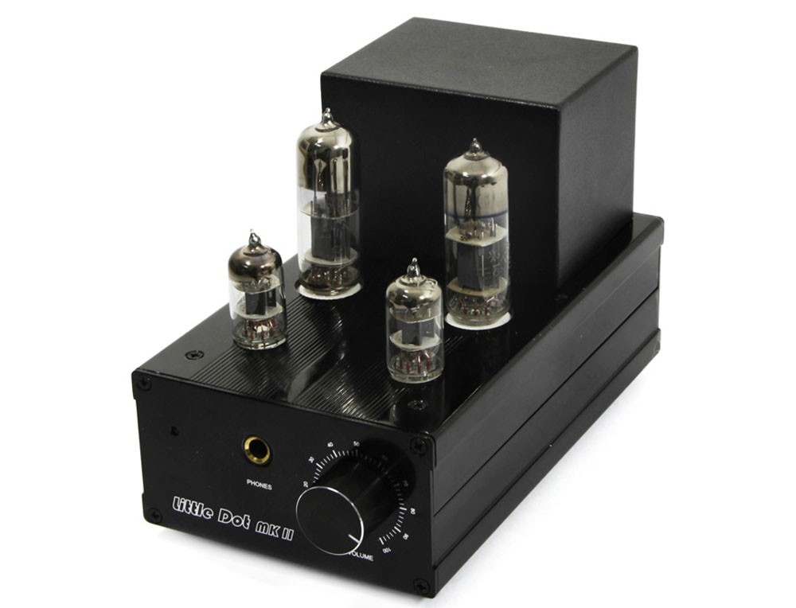

Some thoughts on headphones:
Headphones are interesting little gadgets that complement my passion for music. They present musical performances in an intimate and cost-effective manner. Although the technology is fairly mature, there are still multitudes of different implementations from manufacturers all over the world. From $5 Apple earbuds to the Sennheiser Orpheus with a price tag comparable to a new sports car, every pair of cans in between brings something new to the table.
I use the following criteria for how I choose what audio gear to add to my collection ↓
- A headphone needs to be comfortable
- A headphone must reproduce music accurately and without distortion
- Accessories to headphones must have a well-defined and unique purpose
- The price point must meet my definition of functionality and
affordability
On this webpage I'll be talking about what headphones and accessories I own so far and what makes them unique ↓
- Beyerdynamic Amiron home
- Fostex TH-X00 Purpleheart
- TFZ King
- Little Dot MKII tube amplifier
- JDS Labs Objective2 amplifier
Beyerdynamic Amiron home
These headphones use a design principle called "open-back", i.e. they allow sound to leak out from the driver housing. This allows the sound to breathe to create a more realistic sound stage. While listening, you can pinpoint where every instrument is located, and it sounds like the musicians are in the room with you.
These headphones were made in Germany, and they adhere to the engineering aesthetics you expect from a German product. They look industrial and clean, and they feel light but heavy duty. These are the most comfortable pair of cans I own; they feel like pillows on your head.
Fostex TH-X00 Purpleheart
These Japanese headphones are closed-back. They don't leak sound because the drivers are housed in solid wood, purpleheart wood to be exact. As a result, the bass response on these cans is stellar. They still blow my mind how thumping electronic music sounds through them.
TFZ King in-ear monitors
These headphones from China are unique because they are built for portability. These are the pair that I take outside and to the gym. The drivers rest inside my ear canal while I'm listening. They are most often paired with my phone, and they are
efficient enough to not require a separate amplifier.
Little Dot MKII

Remember those old vacuum tubes from the 1950's? Me neither, but you can still use them! Outside of guitar amplifiers, they are also popular with headphone amplifiers, and this Chinese amp lets you enjoy the sound of good old fashioned tubes.
The presentation of music through tubes sounds more natural. Digital waveforms tend to have sharp angles that can come across a little harsh. With tubes, the frequencies are stretched out, everything sounds more relaxed. The result is a soft yet full presentation, and it makes everything old sound new again.
O2 amp
This amplifier was assembled by JDS Labs here in the USA, but the story behind its design is shrouded in mystery. It is an open source design by "NwAvGuy", an anonymous electrical engineer who wanted to make the best amplifier for the least amount of money. He's no longer active but you can Google his blog.
The sound of the Objective2 is just that: 100% objective. It doesn't try to color the signal; it just adds gain and that's it. There's zero background noise when it's silent, and it can push volume up to ear shattering levels. It can bring out the best in any pair of headphones you hook up to it.
Final thoughts
In a perfect world, I would just carry loudspeakers with me everywhere I go and crank it up. Headphones address that imperfection with an elegant solution: your music only exists between your two ears.
I've only scratched the surface of what's possible with headphones. I haven't touched planar magnetic or electrostatic technology, and there is a plethora of manufacturers I want to try. Although I'm happy where I'm at now, my goal in this hobby is to visit headphone conventions, learn different perspectives of audio reproduction and experience new headphones and amplifiers.